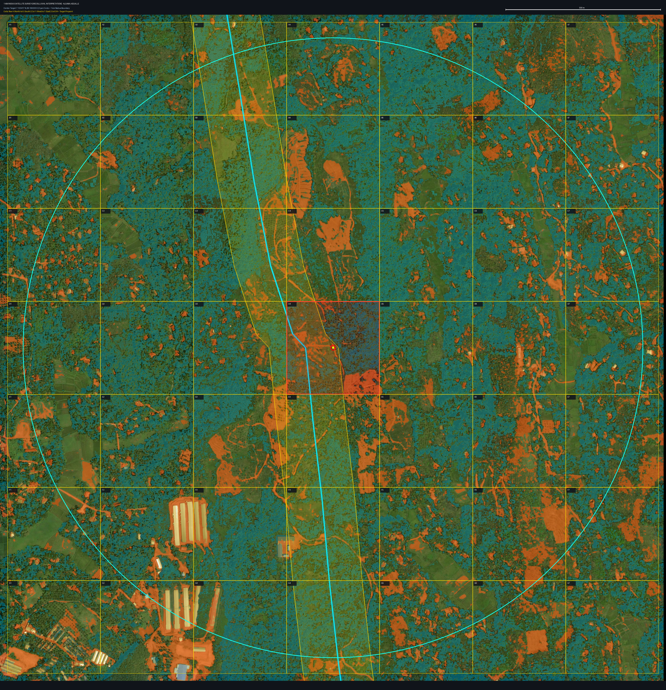

Sentinel-2 Gemstone Exploration Portal
Geospatial remote sensing pipelines, spectral mineral alteration indices, and high-resolution 1km-radius ultra close-up grid survey platforms for alluvium and saprolite gem placer reconnaissance in Sri Lanka.


Spectral Mineral Indices Architecture
Iron Oxide Ratio (IOR)
Highlights goethite, hematite, and limonite staining prevalent in decomposed saprolite profiles and heavy-mineral illam gravels.
Clay Minerals Ratio (CR)
Detects Al-OH absorption doublet (2.16-2.20 µm) characteristic of kaolinite and illite formed during pegmatite & gneissic bedrock weathering.
Hydroxyl Alteration (HI)
Measures hydroxyl-bearing mineral presence and hydrothermal alteration boundaries across Precambrian metamorphic belts.
Placer Favorability Model
Multi-criteria synthesis scoring mineral enrichment on non-vegetated exposed riverbeds, gravel bars, and alluvial terraces.